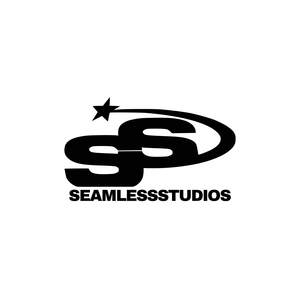

Trade Mark Journal No.2025/046 14 November 2025
UK00004287519 31 October 2025 (25)

- Class 25
- Clothing; Knitwear [clothing]; Jackets [clothing]; Ready-to-wear clothing; Woolen clothing; Linen clothing; Clothes; Jerseys [clothing]; Denims [clothing]; Shorts [clothing]; Leather clothing; Collars [clothing]; Knitted clothing; Hoods [clothing]; Windproof clothing; Embroidered clothing; Belts [clothing]; Belts for clothing; Rainproof clothing; Waterproof clothing; Casual clothing; Jackets being sports clothing; Jackets (Stuff -) [clothing]; Stuff jackets [clothing]; Bottoms [clothing]; Ready-made clothing; Clothing for leisure wear; Leisure clothing; Tops [clothing]; Men's clothing; Jogging bottoms; Jogging pants; Jogging tops; Jogging bottoms [clothing]; Jogging suits; Sweatshirts; Hooded sweatshirts; Jumpers [pullovers]; Hooded pullovers; Hoodies; Casual trousers; Casual shirts; Tracksuits; Denim jackets; Sweatshorts; Tracksuit bottoms; Socks for men; Sweatpants; Pullovers; Fleece pullovers; Short-sleeved T-shirts; Jumpers [sweaters]; Fleece vests; Hooded sweat shirts; Denim pants; Tracksuit tops; Collared shirts; Denim jeans; Fleece jackets; Sweat pants; Sweat shorts; Sweat bottoms; Sweat suits; Camouflage pants; Men's socks; Socks; Short-sleeved shirts; Long-sleeved shirts; Bodies [clothing]; Clothing for men, women and children; Men's underwear; Women's clothing; Cashmere clothing; Clothing of leather; Sports clothing; T-shirts; Shirts; Tee-shirts; Printed t-shirts; Turtleneck shirts; Short-sleeve shirts; Knit shirts; Camouflage shirts; Soccer shirts; Sweat shirts; Woven shirts; Beanies; Sleeved jackets; Fleece shorts; Sweaters; Jeans; Beanie hats; Jerseys; Shorts; Polo sweaters; Button down shirts; Cardigans; Turtleneck sweaters; Hats; Scarves; Scarfs; Jackets; Tank-tops; Turtlenecks; Sleeveless pullovers; Hooded tops; Overshirts; Polo shirts; Polar fleece jackets; Gilets; Fleece tops; Bomber jackets; Gloves for apparel; Gloves [clothing]; Fabric belts [clothing]; Tops; Tank tops; Pants; Trousers; Cargo pants; Polo knit tops; Track pants.
Conor Joseph Green